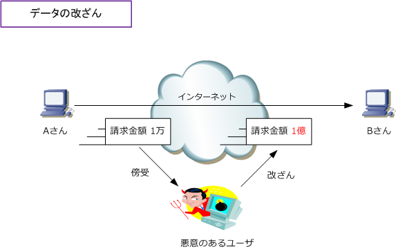
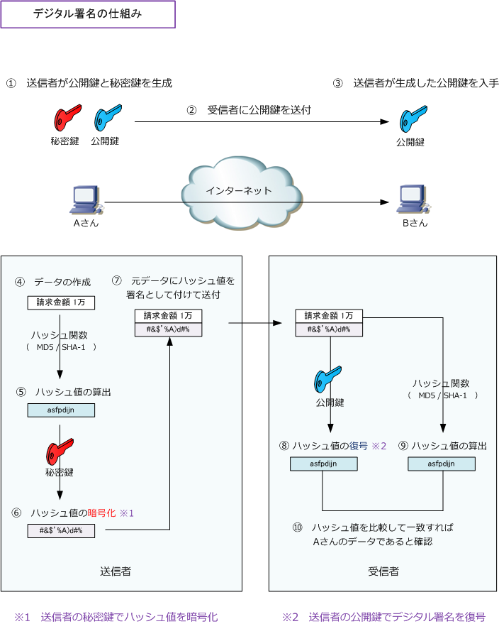

Digital Signature
デジタル署名とは
デジタル署名は、送信されてきたデータが間違いなく本人のものであるのかを証明するのための技術です。 例えば、Aさんという送信者からデータを受信できても、そのデータが本当にAさんから受信できたのかを 確認することが出来ませんし、下図のように、伝送経路上でデータが改ざんされている可能性もあります。 そこで、送信者が本当にAであり、データの改ざんがないことを確認するためにデジタル署名を使用します。

デジタル署名はデータの送信者を証明できるので、データの改ざんが行われていないことを確認できます。 デジタル署名は公開鍵暗号を応用した技術でもあり、デジタル署名の仕組みのなかで公開鍵と秘密鍵も 登場します。ハッシュも使用しています。デジタル署名を実現できる方式にはRSAやDSAなどがあります。
デジタル署名の仕組み

| 項番 | 説明 |
|---|---|
| ① | 送信者で公開鍵と秘密鍵を生成する。（デジタル署名では送信者側で生成） |
| ② | 送信者は、受信者に公開鍵を送付する。 |
| ③ | 受信者は、送信者で生成した公開鍵を入手する。 |
| ④ | 送信者が受信者に送付するデータを作成する。 |
| ⑤ | 作成したデータをもとにハッシュ関数を使用してハッシュ値を算出する。 |
| ⑥ | そのハッシュ値を秘密鍵を使用して暗号化する。 |
| ⑦ | ④で作成したデータと⑥で暗号化されたハッシュ値を"署名として"送信する。 |
| ⑧ | 受信者は、暗号化されたハッシュ値を、送信者から入手した公開鍵を使用して復号する。 |
| ⑨ | 受信者は、受信データをもとに、送信者側と同じハッシュ関数を使用して、ハッシュ値を算出する。 |
| ⑩ | ⑧で復号されたハッシュ値と、⑨で算出されたハッシュ値を比較して一致すれば、正しいデータと判断する。 |
デジタル署名では、データだけでなく、データをハッシュ値にしてからこれを署名として受信者に送信します。 受信者は、受信したデータからハッシュ値を算出し、署名として受け取ったハッシュ値と比較することにより データが改ざんされていないことを確認できます。また、第三者が知ることができない秘密鍵でハッシュ値を 暗号化して送信するため、データとハッシュ値の両方が改ざんされたものを受信しても改ざんを検知できます。